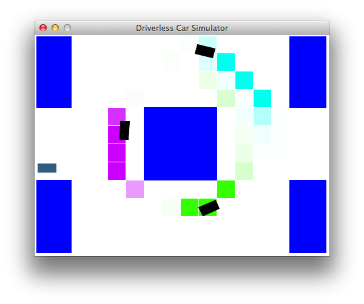
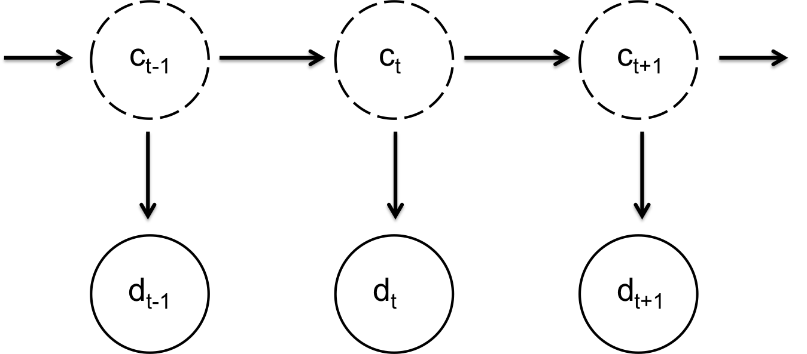

This assignment is a modified version of the Driverless Car assignment written by Chris Piech.
A study by the World Health Organisation found that road accidents kill a shocking 1.24 million people a year worldwide. In response, there has been great interest in developing autonomous driving technology that can can drive with calculated precision and reduce this death toll. Building an autonomous driving system is an incredibly complex endeavor. Therefore, in this assignment, you will focus on the sensing system, which allows us to track other cars based on noisy sensor readings.
Getting started. Let's start by trying to drive manually:
python drive.py -l lombard -i none
You can steer by either using the arrow keys or 'w', 'a', and 'd'. The up key and 'w' accelerates your car forward, the left key and 'a' turns the steering wheel to the left, and the right key and 'd' turns the steering wheel to the right. Note that you cannot reverse the car or turn in place. Quit by pressing 'q'. Your goal is to drive from the start to finish (the green box) without getting in an accident. How well can you do on crooked Lombard street without knowing the location of other cars? Don't worry if you aren't very good; the staff was only able to get to the finish line 4/10 times. This 60% accident rate is pretty abysmal, which is why we're going to build an AI to do this.
Flags for python drive.py:
-a: Enable autonomous driving (as opposed to manual).-i <inference method>: Use none, exactInference, particleFilter to (approximately) compute the belief distributions.-l <map>: Use this map (e.g. small or lombard). Defaults to small.-d: Debug by showing all the cars on the map.-p: All other cars remain parked (so that they don't move).Modeling car locations. We assume that the world is a two-dimensional rectangular grid on which your car and $K$ other cars reside. At each time step $t$, your car gets a noisy estimate of the distance to each of the cars. As a simplifying assumption, we assume that each of the $K$ other cars moves independently and that the sensor reading for each car is also independent. Therefore, in the following, we will reason about each car independently (notationally, we will assume there is just one other car).
At each time step $t$, let $c_t \in \mathbb R^2$
be a pair of coordinates representing the actual location of
the other car (which is unobserved).
We assume there is a probability distribution $p(c_t \mid c_{t-1})$ which
governs the other car's movement.
Let $a_t \in \mathbb R^2$ be your car's position,
which you observe and also control.
To minimize costs, we use a simple sensing system based on a microphone.
Specifically, the microphone provides us with $d_t$,
which is a Gaussian random variable with mean equal
to the distance between your car and the other car
and variance $\sigma^2$ (in the code, $\sigma$ is Const.SONAR_STD, which
is about two-thirds the length of a car).
In symbols,
util.pdf(mean, std, value) to compute the
probability density function (PDF)
of a Gaussian with given mean and standard deviation, evaluated at value.
Note that the PDF does not return a probability (densities can exceed $1$),
but for the purposes of this assignment, you can get away with treating it like a probability.
Figure 4: The Gaussian probability density function for the noisy distance observation $d_t$.
Your job is to implement a car tracker that (approximately) computes the posterior distribution $p(c_t \mid d_1, \dots, d_t)$ (your beliefs of where the other car is) and update it for each $t = 1, 2, \dots$. We will take care of using this information to actual drive the car (set $a_t$ as to avoid collision with $c_t$), so you don't have to worry about this part.
To simplify things, we will discretize the world into tiles, 2-tuples $(r,c)$ for
integers $0 \le r < \text{numRows}$ and $0 \le c < \text{numCols}$,
and store a probability for each tile $(r,c)$ (in code, this is self.belief.getProb(r, c)).
To convert from a tile $(r,c)$ to a location value,
use util.rowToY(r) and util.colToX(c).
Problem 1 will be a simple warmup. In Problems 2 and 3, you will implement ExactInference,
which computes a full distribution over tiles (r,c).
In Problem 4, you will implement ParticleFilter,
which works with particle-based represention of this distribution.
First, let us look at a simplified version of the car tracking problem. For this problem only, let $c_t \in \{0, 1\}$ be the actual location of the car we wish to observe (at time step $t$). Let $d_t \in \{0, 1\}$ be a direct sensor reading for the location of that car (also at time $t$).
Given a probability distribution $p(c_t \mid c_{t-1})$ that governs the movement of the car, and a distribution $p(d_t \mid c_t)$ for the sensor reading, find the posterior distribution for the car's position given different sets of sensor readings.
For the following problems, let $$ \begin{eqnarray} p(c_t \mid c_{t-1}) = \left\{ \begin{array}{lr} \epsilon & \textrm{if}~ c_t \neq c_{t-1} \\ 1 - \epsilon & \textrm{if}~ c_t = c_{t-1}\\ \end{array}\right.. \end{eqnarray} $$ $$ \begin{eqnarray} p(d_t \mid c_t) = \left\{ \begin{array}{lr} \eta & \textrm{if}~ d_t \neq c_{t} \\ 1 - \eta & \textrm{if}~ d_t = c_t\\ \end{array}\right.. \end{eqnarray} $$
In this part, we assume that the other car is stationary (e.g., $c_t = c_{t-1}$ for all time steps $t$).
You will implement a function observe that takes
the current posterior probability $p(c_t \mid d_1, \dots,
d_{t-1})$ (self.belief in ExactInference),
a new observation $d_t$,
and sets self.belief to
$$p(c_t \mid d_1, \dots, d_t) \propto p(d_t \mid c_t) p(c_t \mid d_1, \dots, d_{t-1}).$$
Figure 3: The probability of a car's location given an observation.
observe method in
the ExactInference class of submisstion.py.
This method should update the posterior probability of each tile given the observed noisy distance.
After you're done, you should be able to find the stationary
car by driving around it (-p means cars don't move):python drive.py -a -p -d -k 1 -i exactInference
On the small map, the autonomous driver will sometimes drive in circles around the middle block before heading for the target area. In general, don't worry too much about driving the car. Instead, focus on if your car tracker correctly infers the location of other cars.
You can also turn off -a to manually drive.
Don't worry if your car crashes once in a while! Accidents do happen. However, even if there was an accident, your driver should have been aware that there was a high probability that another car was in the area.
Now, let's consider the case where the other car is moving
according to transition probabilities $p(c_t \mid c_{t-1})$.
We have provided the transition probabilities for you in self.transProb.
Specifically,
self.transProb[(oldTile, newTile)] is the probability of the other car
being in newTile at time step $t$ given that it was in oldTile at time step $t-1$.
In this part, you will implement a function elapseTime that takes
the posterior probability of the previous time step $p(c_{t-1} \mid d_1, \dots,
d_{t-1})$ (self.belief in ExactInference),
and sets self.belief to
$$p(c_t \mid d_1, \dots, d_{t-1}) \propto p(c_t \mid c_{t-1}) p(c_{t-1} \mid d_1, \dots, d_{t-1}).$$
ExactInference by implementing the
elapseTime method.
When you are all done, you should be able to
track a moving car well enough to drive autonomously:python drive.py -a -d -k 1 -i exactInference
python drive.py -a -d -k 3 -i exactInferenceand even down Lombard:
python drive.py -a -d -k 3 -i exactInference -l lombard
On Lombard, the autonomous driver may attempt to drive up and down the street before heading towards the target area. Again, focus on the car tracking component, instead of the actual driving.
Though exact inference works well for the small maps, it wastes a lot of effort
computing probabilities for cars being on unlikely tiles.
We can solve this problem using a
particle filter which has complexity linear in the number of particles
rather than linear in the number of tiles.
Implement all necessary methods for the ParticleFilter
class in submission.py. When complete, you should be
able to track cars nearly as effectively as with exact inference.
observe and elapseTime functions.
These should modify self.particles, which is a map from tiles $(r,c)$ to the
number of times that particle occurs, and self.belief, which needs to be updated after you
resample the particles.
You should use the same transition probabilities as in exact inference. The belief distribution generated by a particle filter is expected to look noisier compared to the one obtained by exact inference.
python drive.py -a -i particleFilter -l lombardTo debug, you might want to start with the parked car flag (
-p) and the display car flag (-d).
So far, we have assumed that we have a distinct noisy distance reading for each car, but in reality, our microphone would just pick up an undistinguished set of these signals, and we wouldn't know which distance reading corresponds to which car. First, let's extend the notation from before: let $c_{ti} \in \mathbb R^2$ be the location of the $i$-th car at the time step $t$, for $i = 1, \dots, K$ and $t = 1, \dots, T$.
Let $d_{ti} \in \mathbb R$ be the noisy distance measurement of the $i$-th car, which is now not observed. Instead, we observe the set of distances $e_t = \{ d_{t1}, \dots, d_{tK} \}$ (assume that all distances are all distinct). Alternatively, you can think of $e_t = (e_{t1}, \dots, e_{tK})$ as a list which is a random permutation of the noisy distances $(d_{t1}, \dots, d_{tK})$. For example, suppose $K=2$ and $T = 2$. Before, we might have gotten distance readings of $1$ and $2$ for the first car and $3$ and $4$ for the second car. Now, our readings would be permutations of $\{1, 3\}$ and $\{2, 4\}$. Thus, even if we knew the second car was distance $3$ away in $t = 1$, we wouldn't know if it moved farther ($4$ away) or closer ($2$ away) in $t = 2$.